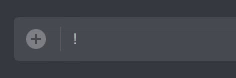
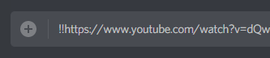

Soundboards are not a new idea — there are countless apps and services that offer a decent selection of
sound effects, with origins ranging from TV shows to video games to the users themselves. But for the
average Discord server, there is often a demand for very specific sound effects: perhaps the group wants to be
able to play sounds from a lesser-known game, or a recorded clip of one of their friends saying something
iconic. Maybe the group wants to hear well-known sounds, but finding soundboards for each would result in an
unnecessary number of bot users in the server.
I made Cassoundra after I saw how much fun my
friends had with standard soundboards, and realized how much more fun they would be if not limited to the handful
of sound effects selected by someone else.
Anyone can upload any MP3 file on their computer, giving it any name that hasn't already been used. If the sound effect might be startling to some listeners, it may be marked "Loud."
The full list of sounds available to be played, as well as previews and play counts, are also available from the web interface.
Playing back any sound is as simple as typing it into a text channel preceded by ! while you're in a voice call.
Only one sound can be playing at a time. Anyone can stop the playing sound by sending a ~.
Even sound files that aren't uploaded to Cassoundra can be played. Nearly all video and audio websites can be played as though they were uploaded directly with the website. Simply type !! followed by a link to the sound.
